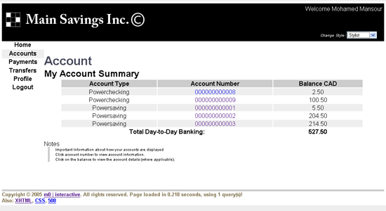

Quick Intro
Mohamed Mansour - 2911834 (section A)
Aha Remember to look to at my custom made blogger that explains breifly about this project!
http://www.m0interactive.com/portfolio/java/j2ee_online_banking_web_application/
Theory
Architecture ^
J2EE applications are best developed using the Model-View-Controller (MVC) application model, which consists of the following three elements:
Element |
Description |
|---|---|
Model |
Represents the application data and the business rules that manage the data. In J2EE applications, the model is typically represented by EJBs. |
View |
Renders the content of the model to the user of the application. In J2EE applications, the view is typically provided by JSP pages. |
Controller |
Defines how the application works. It maps user actions (such as button clicks) to operations performed by the model (such as updating information in a database). The controller mediates between the view and the model. In J2EE applications, the controller is typically a servlet, JavaBean, or session bean. |
Using the MVC architecture, we separated the data, display, and flow of an application, allowing for greater flexibility and ease of reuse. MVC is also was a very good way to develop applications that support multiple presentations of the same data. As you can see we change the style of each page with ease.
Website Layout and Design ^
The overall layout was using the latest technology that includes XHTML, CSS 2.0, using some DOM for the AJAX development. The reason why such technology was used is because web standards in web design are the most important criteria to look at. The stats in table 1 show the different stats among the users who browse online. It is clearly an issue these days of how really a webpage looks like among all these browsers.
The answer really, is that each browser has its own way to render html pages. Therefore don’t be sure the webpage that runs in Internet Explorer will look the same as Netscape. Internet Explorer is known to be poor at rendering. So a web designer should be aware to use Web standards to construct pages. Web standards allow much joy in a webpage, your webpage will look at its best in every device (PALM/PDA/BROWSERS/Ect.).
This site is designed using the web standard approach. It validates the W3C test and is Bobby A approved. Tools were used to prove this outcome! The HTML structure was using XHTML Strict 1.0 template, and by making a structural XHTML design, it allows the flexibility in our overall design. By changing 1 file, the whole website look will change completely!
We have included a custom built JavaScript style chooser which demonstrates this point. By selecting your style of your choice, the whole website template changes!
Programming Design and Structure ^
The overall programming was developed using 3-tier architecture. We have a Model View Controller ( MVC ) ideology in using Enterprise Java Beans as our development tool. Ideally speaking this is the best approach into building webpage’s.
The reason being, we have separated the data, design, and logic into different machines. If a person wants to change his database from using PostgreSQL to MySQL, only one variable needs to be changed and the whole website will still have the same functionality.
We have used a package modular approach for the decouplization of components. That allowed us for reusability and flexibility in the future.
The following is the package structure of the Main Savings Inc.
We jave used Java beans and servlets and JSP for our core implementations. The servlets follow the action pattern and the database follows the data access object pattern. We have used templating and other sort of usefull techniques.
Database Structure ^
The current database was originally 18 tables, we added 3 extra tables:
Payee - Was added to let the bank be control of the payees relevant to the bill payment. So the employees of the bank are allowed to add differnt payee information so that the user can add them to his account for future bill payments.
Customer Payee - The customer payee table is just a relationship. Whenever a customer adds a payee to his account, this table maps the relationship between the customer and the payee, making it a many to many relationship.
Holds - We included this to tell which account is which, withought that, there are no representation to tell which account type is for which user.
We added 3 Procedures into the database which were called:
payBill(AMOUNT,ACCOUNT,PAYEE,CUSTOMER,DATE);
By entering the given parameters the funtion checks many stuff if money is availble, user is availble else throws an exception. This function calls another function which is updateAccount
CREATE FUNCTION payBill(NUMERIC,INTEGER,INTEGER,INTEGER,DATE) RETURNS INTEGER AS ' DECLARE v_desc VARCHAR; DECLARE v_payee VARCHAR; DECLARE v_remaining NUMERIC; DECLARE v_amount NUMERIC; BEGIN IF ($1 < 0 ) THEN RAISE EXCEPTION ''% cannot have negative amount'', $1; END IF; v_amount := -1 * $1; IF v_overdraft IS NULL THEN v_overdraft := 0; END IF; SELECT (amount-abs($1)) INTO v_remaining FROM account WHERE account=$2; SELECT payee INTO v_payee FROM payee WHERE pid=$3; v_desc := ''Bill payment - '' || v_payee; IF (v_remaining < 0) THEN RAISE EXCEPTION ''Insuffient funds, % does not exist in your account'', $1; END IF; INSERT INTO bill(pid,date,account,cid,amount) VALUES($3,current_date,$2,$4,$1); INSERT INTO activity(descr,account,cid,date,rem_bal,amount) VALUES(v_desc,$2,$4,$5,v_remaining,v_amount); PERFORM updateaccount($2,v_amount); RETURN 0; END;' LANGUAGE plpgsql;
updateAccount(ACCOUNT,AMOUNT)
This function just updates the amount field in the Account table, used from the other two functions.
CREATE FUNCTION updateAccount(INTEGER,NUMERIC) RETURNS INTEGER AS '
BEGIN
IF $2 IS NULL THEN
RAISE EXCEPTION ''% cannot have null amount'', $2;
END IF;
IF ($2 < 0) THEN
IF (SELECT true
FROM account
WHERE account=$2
AND amount < abs($2))
THEN
RAISE EXCEPTION ''% not enough money'', $2;
END IF;
END IF;
UPDATE account SET amount=amount+$2 WHERE account=$1;
RETURN 0;
END;' LANGUAGE plpgsql;
transferMoney(AMOUNT,ACCOUNTFROM,ACCOUNTTO,CUSTOMER);
Transfers the money from one account to an other calls the updateAccount function to update the amount, extensive error checking consists as well
CREATE FUNCTION transferMoney(NUMERIC,INTEGER,INTEGER,INTEGER) RETURNS INTEGER AS ' DECLARE v_desc VARCHAR; DECLARE v_remaining NUMERIC; DECLARE v_amount NUMERIC; BEGIN IF ($1 < 0 ) THEN RAISE EXCEPTION ''% cannot have negative amount'', $1; END IF; -- INSERT MONEY TO THE TO v_amount := -1 * $1; SELECT (amount-abs($1)) INTO v_remaining FROM account WHERE account=$2; v_desc := ''Transfer to - '' || to_char($3,'000000000000'); IF (v_remaining < 0) THEN RAISE EXCEPTION ''Insuffient funds, % does not exist in your account'', $1; END IF; INSERT INTO activity(descr,account,cid,date,rem_bal,amount) VALUES(v_desc,$2,$4,current_date,v_remaining,v_amount); PERFORM updateaccount($2,v_amount); -- INSERT MONEY TO THE FROM SELECT (amount+abs($1)) INTO v_remaining FROM account WHERE account=$3; IF (v_remaining < 0) THEN RAISE EXCEPTION ''Insuffient funds, % does not exist in your account'', $1; END IF; v_desc := ''Transfer from - '' || to_char($2,'000000000000'); INSERT INTO activity(descr,account,cid,date,rem_bal,amount) VALUES(v_desc,$3,$4,current_date,v_remaining,$1); PERFORM updateaccount($3,$1); RETURN 0; END;' LANGUAGE plpgsql;
Installation ^
Previous knowledge of J2EE programming is needed.
Run the sql scripts bank.sql and the bank-populate.sql
Package the Web Application
Deploy the application
Run by visiting ( http://localhost:8080/Bank/ ) Assuming that is your host and port. Account: 1 Password: 111
Screehshots ^
Login:
View Accounts:
View Accounts Different Style (by changing the style dropdown simple :), full screen):
View Details of a specific Account
Add a Payee
Pay a Bill, successful!
Transfer Money to an account, transfer error
Alter Profile, fields error
Notes
- This is a readme file.
- All activity is NOT logged.